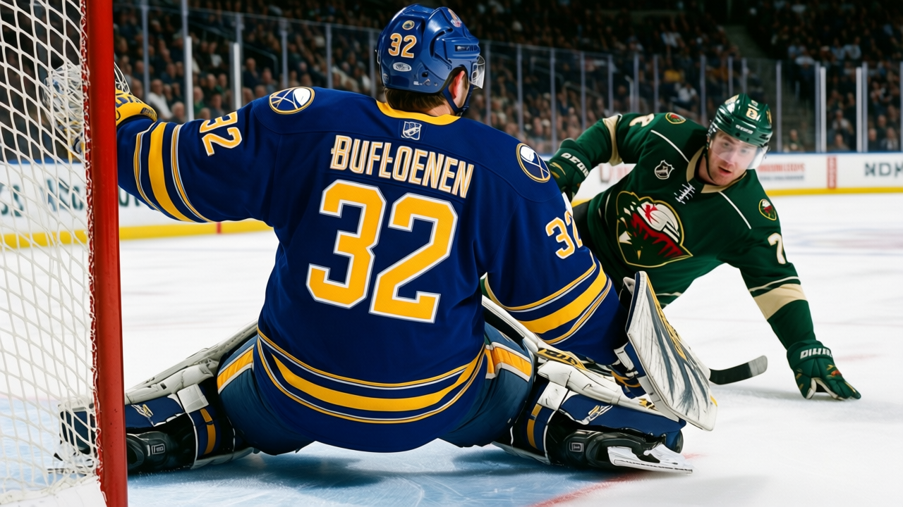

Goalie Watch: Noronen takes the crease in Buffalo, and 4 straight wins follow
The Sabres benched Biron, moved Noronen up, called up Ryan Miller, and are scoring nearly 5 a night over their last 10
 Ray CallumSenior correspondent · Home Ice Network
Ray CallumSenior correspondent · Home Ice Network
 Buffalo Sabres removed
Buffalo Sabres removed  Martin Biron85 from the active roster this week, promoted
Martin Biron85 from the active roster this week, promoted  Mika Noronen78 to the starter role, and dressed
Mika Noronen78 to the starter role, and dressed  Ryan Miller79 as the backup. The Sabres have won 4 straight since the change.
Ryan Miller79 as the backup. The Sabres have won 4 straight since the change.
Biron had started 31 of 36 games, a 86 percent workload. He was in net when Buffalo gave up 7 to Boston on Dec 26. They entered that game with 157 goals against in 36 games, the worst mark in the league.
The offense carried the change. In their last 10 overall, the Sabres have scored 48 goals and allowed 39. Thursday they put 7 on  Minnesota Wild at home. Saturday they scored 4 at
Minnesota Wild at home. Saturday they scored 4 at  Washington Capitals.
Washington Capitals.
Noronen, in 6 starts this season before the promotion, carried a 17 percent share. He is 22. Miller, in 7 starts, carried 19 percent. The two young goalies who were splitting spot duty are now G1 and G2 behind a starter the coaches apparently lost patience with.
Buffalo sits 2nd in the Northeast behind  Toronto Maple Leafs, at 15-14-3 and 41 points. They are 4 points back of
Toronto Maple Leafs, at 15-14-3 and 41 points. They are 4 points back of  Ottawa Senators for second with two fewer games played. The goals-against number that had them near the cellar is coming down.
Ottawa Senators for second with two fewer games played. The goals-against number that had them near the cellar is coming down.
A 4-game win streak in late December against Washington Capitals, Minnesota Wild, and two others that beat 37-point teams is not much. But it is enough to keep the coaches from putting Biron back in. The Sabres go to Ottawa on Jan 4 and then to Philadelphia on Jan 7. Those will test whether Noronen or whoever starts can hold against the better teams in the East.
Buffalo has given up 157 in 36 games for the season. The last 10 pulled that average down. Whether the next 10 keep it falling, or just reflect soft competition, is the open question.